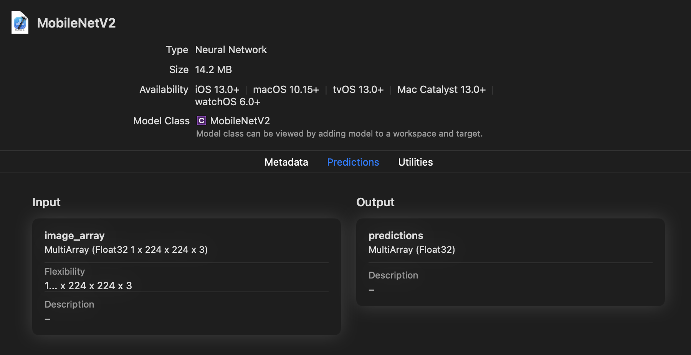
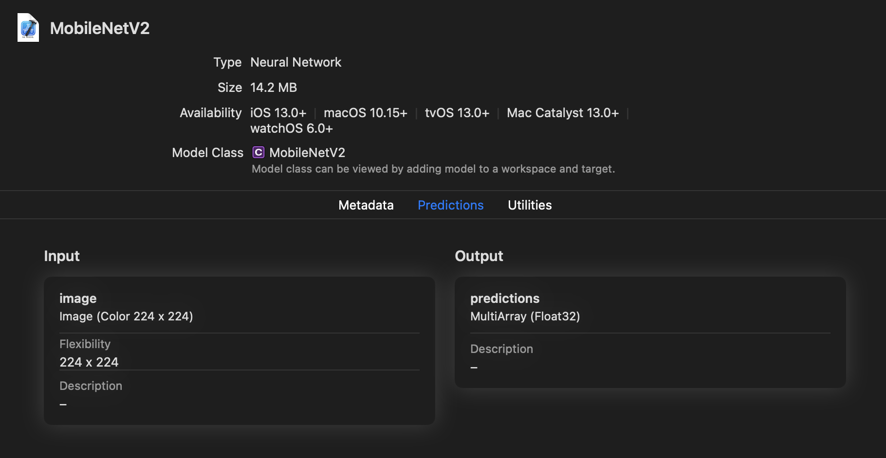
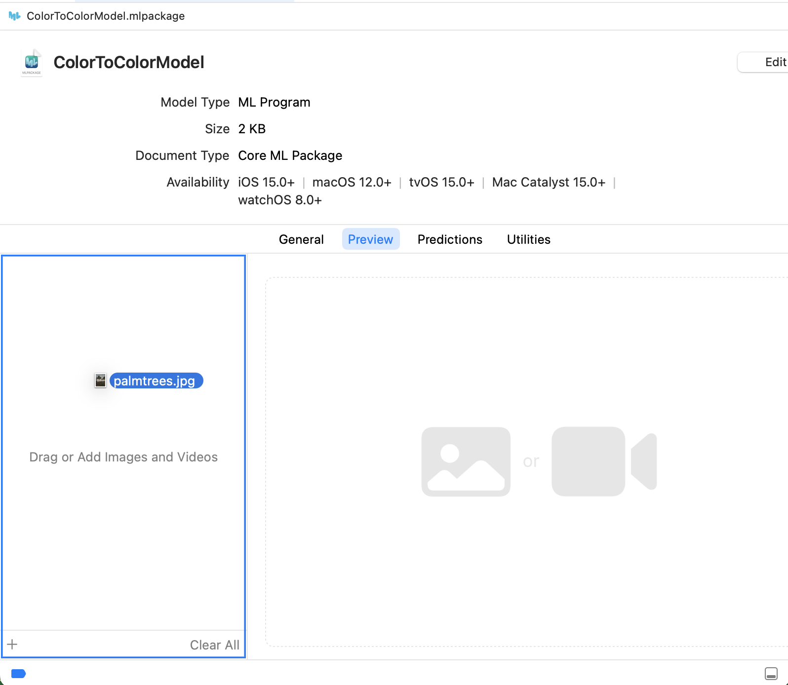
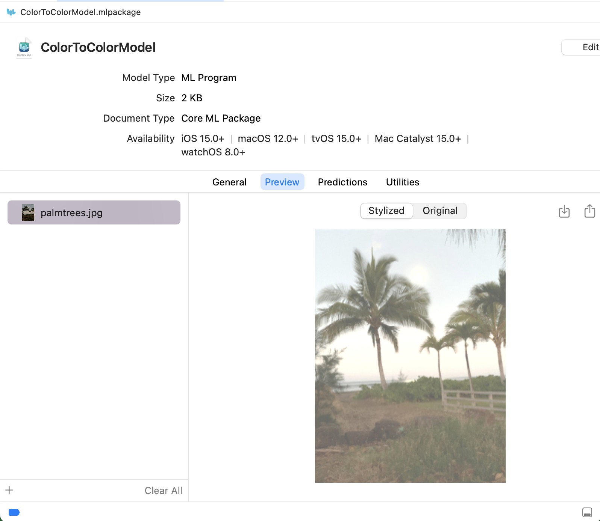

Image Input and Output#
The Core ML Tools Unified Conversion API generates by default a Core ML model with a multidimensional array (MLMultiArray) as the type for input and output. If your model uses images for input, you can instead specify ImageType for the input. Starting in coremltools version 6, you can also specify ImageType for the output.
ImageType Now Supported for Output
Starting in Core ML Tools 6, when converting a model you can specify an ImageType for output as well as for input.
Use an MLMultiArray#
When using convert(), if you include the model only, without an inputs parameter, you get by default a Core ML model with the an input of type MLMultiArray:
import coremltools as ct
# Convert to Core ML with an MLMultiArray as input.
model = coremltools.convert(tf_model)
This example also excludes the outputs parameter, so the Core ML model by default uses the MLMultiArray type for output as well.
The following sample code shows how you can use convert() to convert a TensorFlow 2 model to Core ML neural network with an input of type MLMultiArray. You can then use a NumPy array as input for making a prediction:
import coremltools as ct
import tensorflow as tf # TF 2.2.0
# Load MobileNetV2.
keras_model = tf.keras.applications.MobileNetV2()
input_name = keras_model.input_names[0]
# Convert to Core ML with an MLMultiArray for input.
model = ct.convert(keras_model)
# In Python, provide a NumPy array as input for prediction.
import numpy as np
data = np.random.rand(1, 224, 224, 3)
# Make a prediction using Core ML.
out_dict = model.predict({input_name: data})
# Save to disk.
model.save("MobileNetV2.mlmodel")
View the resulting model, saved as MobileNetV2.mlmodel, in Xcode. As you can see in the following figure, the input is called image_array and is a MultiArray(1 x 224 x 224 x 3) of type Float32:

You can rename the inputs and outputs using the rename_feature() method. For an example, see Rename a Feature.
One benefit of using the MLMultiArray type that is not available with ImageType is that the MLMultiArray lets you pass a batch of data. In the previous example, if you convert a model with input shape (10, 224, 224, 3), input values can be passed as a batch of 10.
The MLMultiArray type is convenient as a default, but you may want to generate a model that accepts images as input and produces images for output.
Use an ImageType#
If your model expects an image as input, you may want to convert the model to use an ImageType, which may be more convenient for your code. An inefficient MLMultiArray copy operation could become a bottleneck in your model. Using an ImageType is an efficient way to copy over an input of type CVPixelBuffer to the Core ML prediction API.
ImageType for Input#
To use an ImageType for input, include the inputs parameter with convert():
import coremltools as ct
# Convert to Core ML with an ImageType as input.
model = ct.convert(tf_model, inputs=[ct.ImageType()])
By converting a model with ImageType for input, you can apply classification models and preprocess the images using the Vision framework. When providing an image for prediction with a Core ML model, Vision can automatically resize it for you. This makes an ImageType convenient for consumption on the device. The Core ML API also contains several convenient ways to initialize an image feature value.
Note
For details on how to use Vision and Core ML for image classification, see Classifying Images with Vision and Core ML.
MLMultiArray and ImageType differ in their interfaces to the predict() method in Core ML Tools, and differ when running on the device using the Core ML prediction() API. For details about predictions, see Model Prediction.
The following example uses an ImageType for a neural network model input, and makes a prediction. For this example, the type of input for an image must be a PIL image to invoke a prediction in Python:
import coremltools as ct
# Load MobileNetV2.
import tensorflow as tf
keras_model = tf.keras.applications.MobileNetV2()
input_name = keras_model.input_names[0]
# Convert to Core ML with an ImageType for input.
model = ct.convert(keras_model, inputs=[ct.ImageType()])
# Use PIL to load and resize the image to expected size.
from PIL import Image
example_image = Image.open("daisy.jpg").resize((224, 224))
# Make a prediction using Core ML.
out_dict = model.predict({input_name: example_image})
# Save to disk.
model.save("MobileNetV2.mlmodel")
The following figure shows the model preview in Xcode. The image input is of type Image with attributes set to (Color, 224 224). You can rename the inputs and outputs using the rename_feature() method.

In the above figure, the image input is of type Image with attributes set to (Color, 224 224).
ImageType for Output#
To use an ImageType for output, include the outputs parameter with convert():
import coremltools as ct
model = ct.convert(tf_model, inputs=[ct.ImageType()],
outputs=[ct.ImageType()])
For example, the following enables image inputs and outputs to convert a PyTorch model (torch_model) that accepts RGB images with the shape (1, 3, H, W):
import coremltools as ct
# H: image height, W: image width
mlmodel = ct.convert(torch_model,
inputs=[ct.ImageType(shape=(1, 3, H, W),
color_layout=ct.colorlayout.RGB)],
outputs=[ct.ImageType(color_layout=ct.colorlayout.RGB)],
minimum_deployment_target=ct.target.macOS13)
The converter creates a Core ML model that outputs a CVPixelBuffer instance that is ready for use by other iOS or macOS system functions.
ImageType Input and Output Example#
The following example shows how you can use an ImageType for model input and output when converting a model that works with images. The model is created in PyTorch. It has been tested with Python version 3.79 and Torch version 1.11.0.
Import Statements#
The example uses PyTorch (torch) and PIL for Python image support. Import the following:
import torch
import coremltools as ct
from PIL import Image
from IPython.display import display
Image Filter Model#
For this example, create a simple image “blanching” filter model that whitens an image by adding 100 to each pixel value:
class ImageFilteringModel(torch.nn.Module):
def forward(self, x):
return x + 100
Trace the PyTorch Model#
The following code snippet traces the model instantiated from ImageFilteringModel, using a 256 x 256 pixel image as its shape. The code uses jit (JIT tracer) to generate TorchScript. For details about tracing PyTorch models before converting them, see Model Tracing.
torch_model = ImageFilteringModel()
shape = (1, 3, 256, 256)
traced_model = torch.jit.trace(torch_model, torch.rand(*shape))
Convert the Model to an ML Program#
After tracing, use convert() to convert the model to an ML program, specifying ImageType for input and output:
coreml_model = ct.convert(traced_model,
convert_to="mlprogram",
inputs=[ct.ImageType(name="colorImage",
shape=shape,
color_layout=ct.colorlayout.RGB,)],
outputs=[ct.ImageType(name="colorOutput",
color_layout=ct.colorlayout.RGB,)],
)
With PyTorch conversions, if you specify a name with an ImageType for outputs, it is applied to the output name of the converted Core ML model. You can provide a name for the input image (colorImage) and the output image (colorOutput). The "mlprogram" in convert() returns an ML program executable on iOS15+, macOS12+, watchOS8+, and tvOS15+.
For an ImageType, color_layout must be a string or enumeration of type ct.colorlayout.
Test With an Image#
The following code snippet opens, resizes, and saves a sample image at 256 x 256 pixels, and then uses predict() to test the image with the model, producing an image for output:
img = Image.open("palmtrees.jpg")
img = img.resize((256, 256), Image.ANTIALIAS)
display(img)
img.save("palmtrees_256_by_256.jpg")
Photo of palm trees and moon.#
output = coreml_model.predict({"colorImage" : img})["colorOutput"]
display(output)
output.save("palmtrees_result.png")
Same photo, whitened by the blanching model.#
The result is a blanched version of the photo.
Save and Open in Xcode#
Save the converted model in an ML package.
coreml_model.save("ColorToColorModel.mlpackage")
You can now double-click the ML package to open it in Xcode. Open the Preview tab and drag an image to the input well to test it:

Click the Stylized button in the preview:

The Xcode preview verifies that the converted model transforms any JPEG image.
Set the Scalar Type#
For an ImageType, Core ML supports 8-bit grayscale and 32-bit color images with 8 bits per component. For an MLMultiarray, Core ML supports int 32, double, and float 32 as the scalar types. Starting in iOS 16 and macOS 13, you can also use OneComponent16Half Grayscale images and float 16 multiarrays for inputs and outputs.
Grayscale Images and Float 16 Multiarrays
Starting in iOS 16 and macOS 13, you can use OneComponent16Half Grayscale images and float 16 multiarrays for model inputs and outputs. Using GRAYSCALE_FLOAT16 for input or output is available only if the minimum_deployment_target is specified as iOS16 or macOS 13.
The following example shows how you can specify the inputs and outputs arguments with colorlayout to set GRAYSCALE_FLOAT16 images for both input and output:
import coremltools as ct
# float 16 input and output of type grayscale images
mlmodel = ct.convert(
source_model,
inputs=[ct.ImageType(shape=input.shape,
color_layout=ct.colorlayout.GRAYSCALE_FLOAT16)],
outputs=[ct.ImageType(color_layout=ct.colorlayout.GRAYSCALE_FLOAT16)],
minimum_deployment_target=ct.target.iOS16)
By using the dtype argument in a TensorType, you can control the type of the MLMultiArray for both inputs and outputs. For example, to specify np.float16:
import coremltools as ct
mlmodel = ct.convert(keras_model,
inputs=[ct.TensorType(dtype=np.float16)],
outputs=[ct.TensorType(dtype=np.float16)],
minimum_deployment_target=ct.target.macOS13)
If dtype is missing, the TensorType defaults to float 32.
Add Image Preprocessing Options#
Image-based models typically require the input image to be preprocessed before you can use it with the converted model. You may also need to apply the same transformations used in the original model.
The Unified Conversion API provides the option to specify preprocessing parameters for image inputs during conversion. These parameters include a global scale and channel-specific biases. The scale and biases are stored in the model and, at runtime, are applied according to the following equation:
y_red_channel = x_red_channel * scale + red_bias
y_green_channel = x_green_channel * scale + green_bias
y_blue_channel = x_blue_channel * scale + blue_bias
If you want to use them, specify them while initializing the ImageType class:
image_input = ct.ImageType(name="input_1",
shape=example_input.shape,
scale=scale, bias=bias)
You can then use image_input with the inputs parameter for the convert() method:
# Convert model to coreml with preprocessed image input.
model = ct.convert(
model,
inputs=[image_input]
)
Preprocessing for TensorFlow#
TensorFlow models differ in how they manage image inputs. You need to examine the model to determine if preprocessing is required for the converted model. Please refer to the training recipe for the model that you are converting, and apply the scale and bias during conversion if required.
For example, the TensorFlow MobileNet model shown in the Quickstart Example expects the input image to be normalized with the interval [-1, 1]. When converting it, use a scale of 1/127.5 and bias of -1. You can add scale and bias preprocessing parameters during the initialization of an ImageType, such as when using convert():
import coremltools as ct
import tensorflow as tf # TF 1.15
keras_model = tf.keras.applications.MobileNet()
mlmodel = ct.convert(keras_model,
inputs=[ct.ImageType(bias=[-1,-1,-1], scale=1/127.5)])
Tip
To learn how to evaluate a Core ML model with image inputs in Python, see Model Prediction.
Preprocessing for Torch#
Torch specifies preprocessing with torchvision.transform.Normalize, using the following transformation formula:
output[channel] = (input[channel] - mean [channel]) / std [channel]
For all pre-trained torchvision models, including MobileNetV2, the values are as follows:
mean is
[0.485, 0.456, 0.406].std (standard deviation) is
[0.229, 0.224, 0.225].
The three values correspond to the red ([0.485 and 0.229), green (0.456 and 0.224), and blue (0.406 and 0.225) channels.
In addition, the training recipe for torchvision models assumes that the images have been normalized in the range [0,1] prior to applying the above transform.
Therefore, to start with an image tensor that is in the range [0,255], such as an image loaded with PIL, or with CVPixelBuffer in the Core ML framework for image inputs, the torchvision preprocessing can be represented as follows:
y_red_channel = (x_red_channel/255.0 - 0.485) / 0.229
y_green_channel = (x_green_channel/255.0 - 0.456) / 0.224
y_blue_channel = (x_blue_channel/255.0 - 0.406) / 0.225
The above formulas can be rewritten as follows:
y_red_channel = x_red_channel / (0.229*255) - 0.485/(0.229)
y_green_channel = x_green_channel / (0.224*255) - 0.456/(0.224)
y_blue_channel = x_blue_channel / (0.225*255) - 0.406/(0.225)
For torchvision models, the following are the equivalent Core ML preprocessing parameters:
scale = 1/(0.226*255.0)
bias = [- 0.485/(0.229) , - 0.456/(0.224), - 0.406/(0.225)]
Core ML uses a global scale value rather than channel-specific values that torchvision uses. Since the three scale values for torchvision models are very close, using one average value works reasonably well:
0.226 = (0.229 + 0.224 + 0.225)/3
The ImageType input type lets you specify the scale and bias parameters. The scale is applied to the image first, and then the bias is added. Before converting, specify the ImageType as follows:
import coremltools as ct
# Set the image scale and bias for input image preprocessing
scale = 1/(0.226*255.0)
bias = [- 0.485/(0.229) , - 0.456/(0.224), - 0.406/(0.225)]
image_input = ct.ImageType(name="input_1",
shape=example_input.shape,
scale=scale, bias=bias)
You can then use image_input with the convert() method:
# Convert traced model to coreml
model = ct.convert(
traced_model,
inputs=[image_input]
)